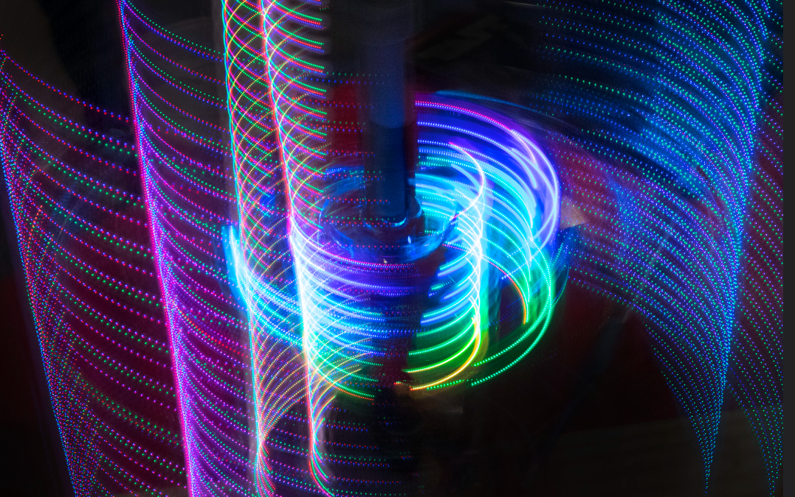
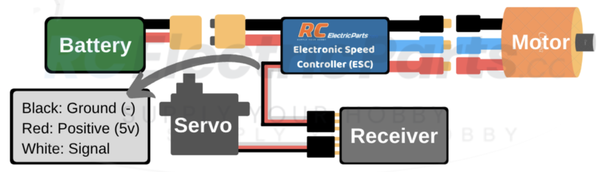
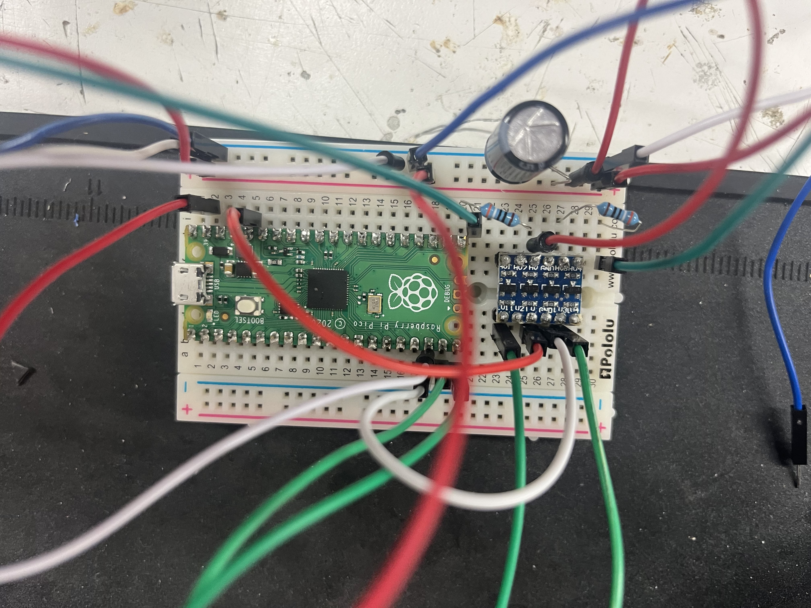
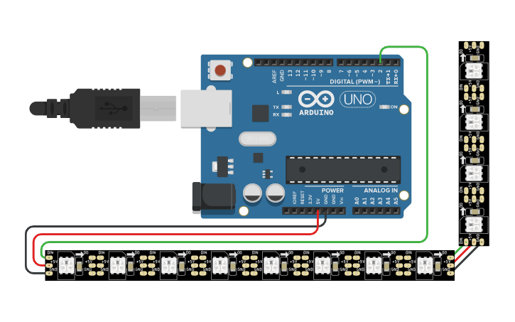
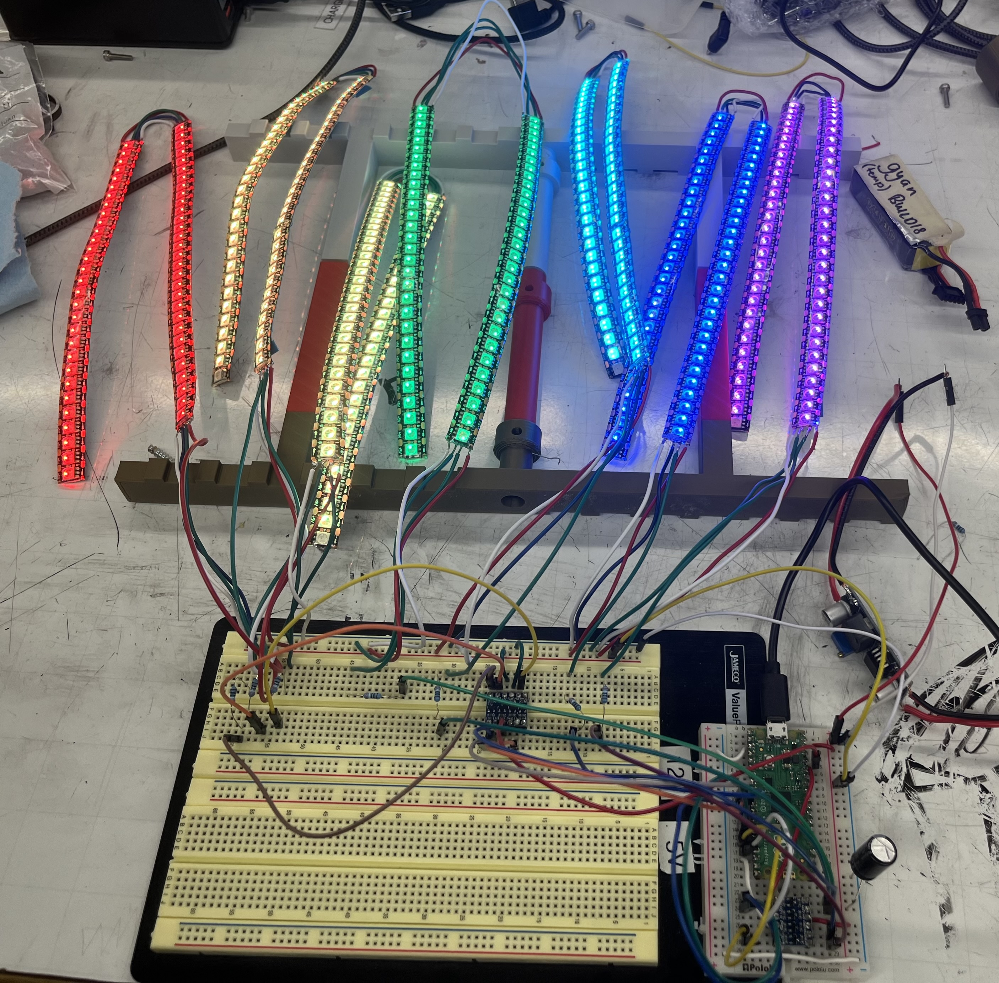
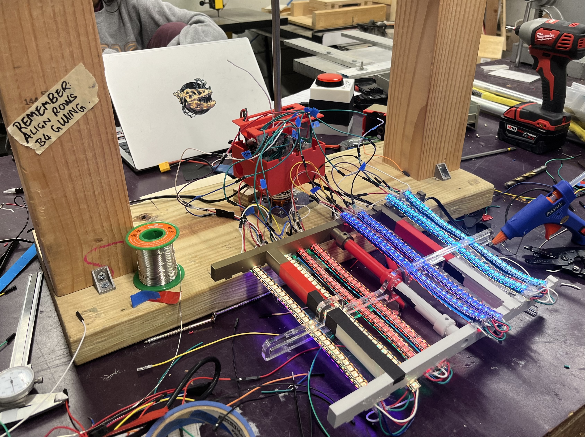

POV LED Display (Build18 2025)
The final product in motion:

Overview
I’m incredibly grateful for my teammates (and everyone who helped) and all the hours we poured into this project. Pulling it off in just one week was intense, but this is definitely one of the most memorable and cherishable experiences that I will never forget.
This project is a volumetric display that creates 3D visuals by using the persistence of vision (POV) technology. The general concept is quite simple: it takes advantage of the fact that our eyes retain images for a brief moment after seeing them. As a result, by rotating LEDs or pixels at high frequency, we can take advantage of this phenomenon to create the illusion of complex, floating images.
Our design builds on this idea using LED strips with individually addressable pixels, allowing us to generate cool, dynamic visuals in three-dimensional space.
Parts
Hardware:
- BLDC motor (D3536 Fixed Wing Motor)
- Electronic Speed Controller (RCElectricParts.com’s CLASSIC ESC)
- Raspberry Pi Pico (datasheet)
- LED strips (WS2813 LEDs)
- Metal rod, ball bearing
- LiPo battery (14.8V, 1550mAh or more)
- Buck converter
- Logic level shifter
- Hall effect sensor
Software:
- PlatformIO with VS Code
- Arduino IDE
- C++
- FastLED animation library
Misc:
- power tools
- soldering tools
- breadboard, perfboard
- 3D printer
- Laser cutter
- power supply, oscilloscope, multimeter (for testing)
Procedure
The overall work can be broken down into 4 parts, with the raspberry pi pico being the heart.
- Drive the motor to rotate the rod where the LED strips will be attached to.
- Wiring the main board to control the overall system.
- Power and control the individual pixels of the LED strips.
- The physical build of the frame and custom parts to hold the LEDs.
- Read from the hall effect sensor to keep track of the number of notations and frequency.
1. Motor
The ESC has a user guide with an overview of the wiring diagram, as well as instructions for the first time calibration and startup process.

For the sake of our system, we did not add the servo as we didn’t need it. Please also note that the ESC has a voltage range, and we had to put a buck convertor at the battery to step down the voltage before feeding it into the ESC.
After everything is properly plugged in, we fed a 50Hz PWM signal to control the ESC, with 1ms being zero throttle and 2ms being full throttle. Below was the very simple code I used for testing.
1 | void setup(){ |
Also, stabilize the motor before testing it since it rotates really rapidly.
2. Control Board
We chose to use Raspberry Pi Pico for its low power consumption, compact size, and affordability. It’s mainly in charge of controlling the LEDs and also adjusting the speed of the motor.
The general idea of the wiring looked like this:
- 14V Battery -> buck convertor (to step down the voltage to 5V) -> Raspberry Pi Pico & LED strips
- Raspberry Pi Pico GPIO (3.3V) -> level shifter -> WS2812B LED strip DIN (5V)
We used a level shifter for better signal stability. Also, each separate LED strip took a different GPIO output from the pico and needed to go through a different channel on the level shifter.

After some initial testing to confirm the basic functionality of our design, we transferred everything onto a perfboard. This made the setup more compact, sturdy, and much easier to manage.
3. LEDs
The LEDs came in spools, so the first thing to do was determining the dimensions we wanted and splitting them into strips so that they can be organized into a matrix on a flat surface.
We then need to connect the split strips together end-to-end so that power and data and flow through, allowing up to control the LED stripe as a whole. This was a straightforward but tedious process that took an incredibly long time since we had 14 strips with 4 tiny connectors at each end that need to be soldered together.

We also spent a lot of time debugging the led strips due to one mistake. We missed the fact that the WS2813 LEDs follow a protocol of dual-signal wires, so we shorted the DIN (data in) with BIN (backup data in) with the assumption that they are functionally the same. This causes the entire LED chain to either display wrong patterns or not light up at all. According to the datasheet, “the BIN receives the data signal and then compares the data with the DIN side after phagocytosis of 24bit data”.
We assumed the best case scenario and did no use the BIN line to transmit any data; however, it still needs to be probably soldered and connected.
We then used the FastLED library to program each individual pixel and configure the specific light patterns we wanted. Examples can be found in the FastLED github repo.
This is the end product.

3. Frame
We noticed that the motor was rotating much faster than expected, which led to instability in the setup. To solve this, we upgraded to a heavier wooden frame that could better withstand the high-speed motion and keep everything stable.
We also designed:
- a custom battery box to securely hold both the battery and control board
- a combination of 3D-printed and laser-cut parts to keep the LED strips in place.
These together ensure both reliability and safety of the display during operation of the display.

Next Step
- We’re thinking about switching to a custom PCB to help clean up the wiring and make the setup more compact.
- We are also considering using RGB matrix (such as this one) instead of LED strips since it’s more flexible to program and takes up less space.
- Finally, we’d like to move to a wireless connection using Bluetooth, so the display can be controlled remotely without needing a physical cable connected to the Raspberry Pi Pico.